The Social Map, spec'd for build
A location layer on top of Mandos: see friends who are out, events, clubs, bars and claimable vouchers around Hong Kong — without ever exposing anyone's exact spot. This is the concise, screen-by-screen brief for the dev team.
One map shows four things: friends, events, clubs/bars, and vouchers. Location is opt-in, sampled only while the map is open, and other users only ever see an approximate area + a "last active" time — never precise coordinates. Users can go Ghost to hide while still browsing. Vouchers are a Phase-1 experiment: tap-to-claim from anywhere today, geofenced to the venue later. Vouchers are authored in a web dashboard. People on the map are users who set an "Out Tonight" status; their avatar ring fades as their presence goes stale, and pins cluster when zoomed out.
What it is
Mandos is a social event-booking app for Hong Kong nightlife. The Social Map is the "what's happening around me right now" surface.
On a single dark map the user explores four kinds of pins — the friends they're already connected with, events happening nearby, the clubs and bars themselves, and digital vouchers ("Mandos Coins"). They can filter to any one type, jump to a date, open any pin for detail, and message friends. Everything sits on top of a strict privacy model: the map never reveals where a person exactly is.
The marker language
LegendFour marker styles. One rule to remember: only events change size.
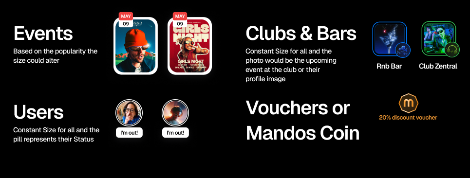
| Marker | Looks like | Sizing | Data shown |
|---|---|---|---|
| Events | Event poster thumbnail with a date badge (e.g. MAY 09) | Variable — bigger = more popular | Poster, date, event name |
| Clubs & Bars | Rounded venue tile (e.g. Rnb Bar, Club Zentral) | Constant | Upcoming-event image or venue profile image + name |
| Users | Circular avatar with a status pill under it ("I'm out!") | Constant | Avatar + status pill; own pin is highlighted as You |
| Vouchers (Mandos Coin) | Hexagonal coin badge | Constant | Discount + distance (e.g. "20% OFF · 2km away") |
Event marker size scales with popularity so hot events read first at a glance. Clubs, bars, users and vouchers are all a fixed size — a bigger pin never means a bigger venue.
Location & privacy — who sees what
Core ruleThe most important part of this feature. Privacy is a product promise, not a setting buried in a menu.
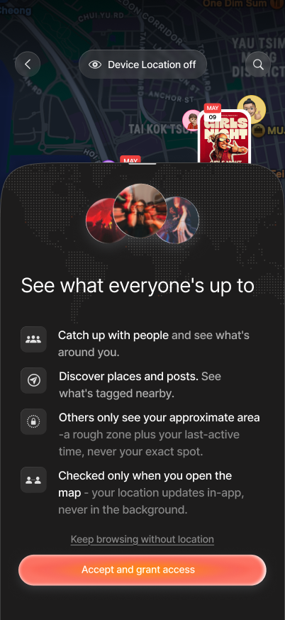
Grant Access (first run)
Before the OS permission prompt, a priming sheet — "See what everyone's up to" — states the privacy deal in plain language. CTA: Accept and grant access, with an escape hatch: Keep browsing without location.
The four promises shown to the user:
- Catch up with people & see what's around you.
- Discover places and posts tagged nearby.
- Others only see your approximate area — a rough zone plus your last-active time, never your exact spot.
- Location is checked only when you open the map — it updates in-app, never in the background.
- Never broadcast precise coordinates of a user to other users. Coarsen server-side (rough zone / rounded geohash) before it reaches another device.
- Other users see an approximate area label + a "last active" timestamp only (e.g. "Out around Fung Tea House · Central · Updated 12min ago"). This is the anti-stalking guarantee.
- Foreground-only sampling: capture position when the map is opened/active. No background location tracking.
- Location is opt-in; the whole map must remain browsable in a degraded, self-hidden mode if access is declined.
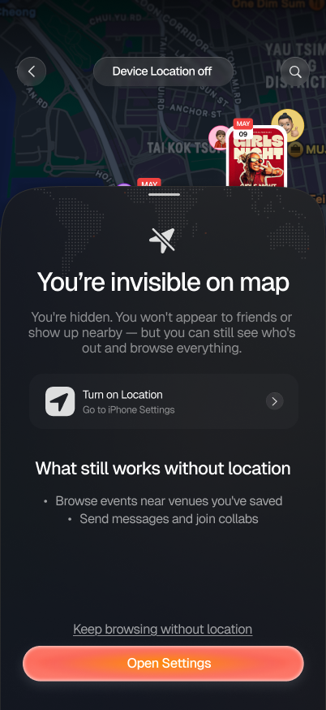
Location-off reminder
When device location is off, the top bar reads "Device Location off" and a reminder sheet — "You're invisible on map" — explains the trade-off and offers Open Settings or Keep browsing without location.
Still works without location: browse events near saved venues, and send messages / join collabs. What's lost: you don't appear to anyone, and there's no "near me" distance.
The map & filters
The default surface once location is granted.
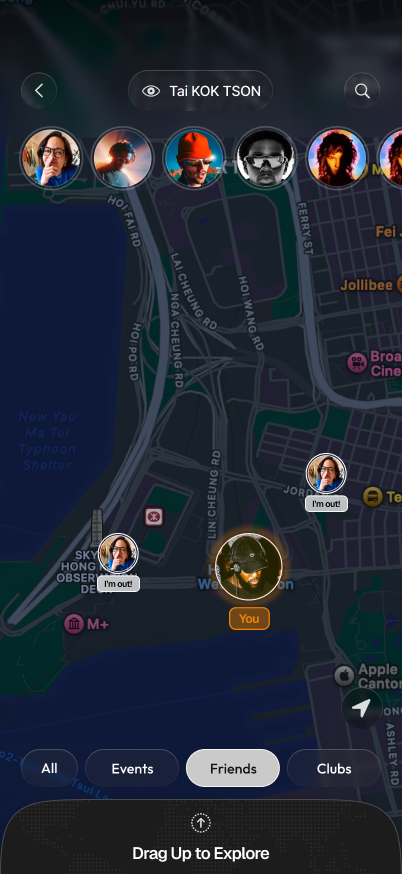
Friends view (default map)
- Top bar: back · current region label (e.g. "Tai Kok Tsui") with an eye/visibility icon · search.
- Avatar row (horizontal scroll) of friends who are out.
- Friend pins with "I'm out!" status pills; own pin is ringed and labelled
You. - Filter chips (bottom): All Events Friends Clubs
- "Drag Up to Explore" bottom sheet → list/region browsing.
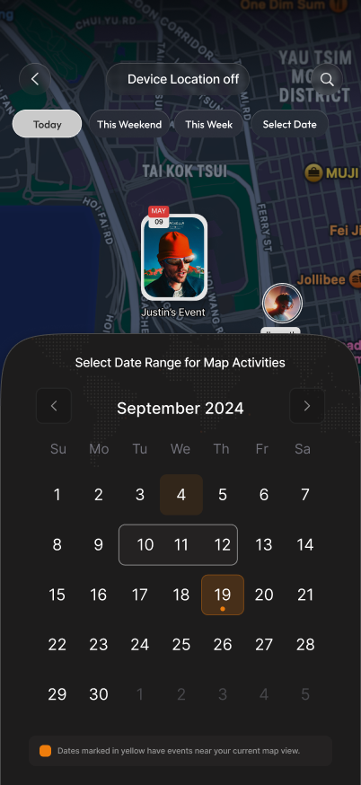
Date filter
Filter map activity by time. Quick chips — Today This Weekend This Week Select Date — plus a calendar for a custom date range.
Dates with events near the current map view are marked in yellow, so the calendar itself hints where activity is. Selecting a date re-queries the map for that day.
Clustering (zoomed-out map)
Perf + legibilityWhen the map is zoomed out, dozens of nearby pins would overlap into noise. Instead, group them into cluster badges.
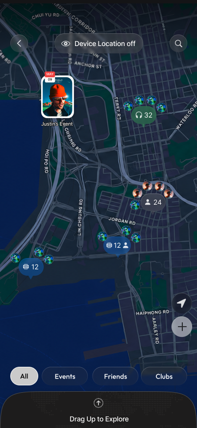
How clusters read
- A cluster is a teardrop badge = count + a dominant-type glyph (person = people, headphones = clubs/nightlife, globe = events).
- Mixed clusters append a small secondary icon (e.g. "12 🌐 + 👤") when a second type is significant.
- Standout single pins stay un-clustered — a prominent event card (Justin's Event) can render on its own even when zoomed out.
- Tap a cluster → zoom to the level where it breaks apart into individual pins.
- Clusters respect the active filter chip — filtering to "Friends" only clusters people, etc.
Recommended approach: index all visible entities with
Supercluster (works
with react-native-maps, MapLibre / Mapbox GL, and Leaflet) and re-query per
viewport + zoom. Carry each pin's type so a cluster can show
the right glyph and count.
import Supercluster from 'supercluster'; // 1. Build the index once from every visible entity. // Each point carries its type so clusters can pick a glyph + tally. const index = new Supercluster({ radius: 60, // cluster radius in px; raise it as you zoom out maxZoom: 16, // past this zoom, stop clustering → show real pins map: (p) => ({ users: p.type === 'user' ? 1 : 0, venues: p.type === 'venue' ? 1 : 0, events: p.type === 'event' ? 1 : 0 }), reduce: (a, p) => { a.users += p.users; a.venues += p.venues; a.events += p.events; }, }); index.load(points); // points = GeoJSON features: geometry + { type } // 2. On every pan / zoom, ask for exactly what to draw. const bbox = [west, south, east, north]; const markers = index.getClusters(bbox, Math.round(zoom)); // 3. Render a cluster badge (count + dominant glyph) or a single pin. markers.forEach((m) => { if (m.properties.cluster) { const { point_count, users, venues, events } = m.properties; const glyph = dominant({ users, venues, events }); // 👤 / 🎧 / 🌐 renderClusterBadge(m.geometry.coordinates, point_count, glyph); } else { renderPin(m); // event / user / venue / voucher } }); // 4. Tapping a cluster zooms to where it splits apart. function onClusterTap(clusterId, coords) { const z = index.getClusterExpansionZoom(clusterId); map.animateTo({ center: coords, zoom: z }); }
If the app uses native map SDKs directly: iOS MapKit gives clustering via
MKMarkerAnnotationView.clusteringIdentifier, and Google Maps
(Android) via the ClusterManager utility. Same idea — the
Supercluster route just keeps the logic shared and portable.
People & messaging
Tapping a friend pin opens their profile sheet — the social heart of the feature.
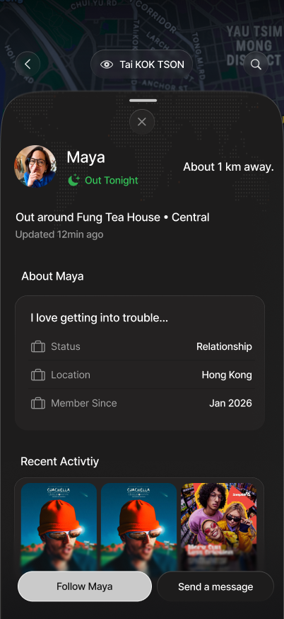
User profile sheet
- Approximate distance — "About 1 km away" (never an exact pin-drop).
- Status — "Out Tonight", with an approximate area: "Out around Fung Tea House · Central".
- Last active — "Updated 12 min ago".
- About — bio, relationship status, home city, member-since.
- Recent Activity — event thumbnails they've engaged with.
- Actions: Follow and Send a message — messaging is the primary connect action.
Users message the friends/connections they see on the map straight from the profile sheet ("Send a message"). Scope for the map release: reuse the app's existing connections + DM system; the map is a new entry point into it, not a new chat product.
Presence & last-active status
ClarifiedA user avatar's ring colour encodes how fresh their presence is. The dimmer/greyer the ring, the older the "last active".
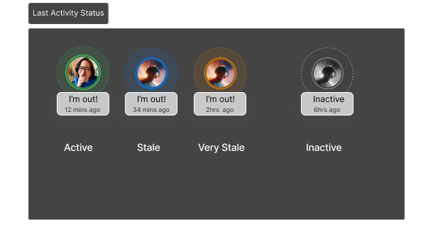
The four freshness tiers
Every marker carries a "last active" timestamp; the ring is derived from its age. Only the newest tier feels truly "live".
| Tier | Ring | Status pill | Age (indicative*) |
|---|---|---|---|
| Active | Green (glowing) | "I'm out!" | ≲ 30 min |
| Stale | Blue | "I'm out!" | ~30–60 min |
| Very stale | Amber | "I'm out!" | ~1–3 hr |
| Inactive | Grey (avatar dimmed) | "Inactive" | ≳ 3 hr |
*Thresholds in the mock (12 min / 34 min / 2 hr / 6 hr) are examples — the exact cut-offs still need to be locked. See build note.
- How long a user stays on the map: for now, shown indefinitely — the user base is small, so we keep presence around. Later, a 2-week cap: after ~14 days of no activity a user's presence expires and drops off the map entirely.
- Who these people are: the "random" people on the map are users who set an "Out Tonight" status — the same presence signal used on the Discover page. So the map is open discovery of who's out, not limited to your own connections.
Visibility — Ghost mode
A user toggle (opened from the eye icon) controlling whether they appear to others.
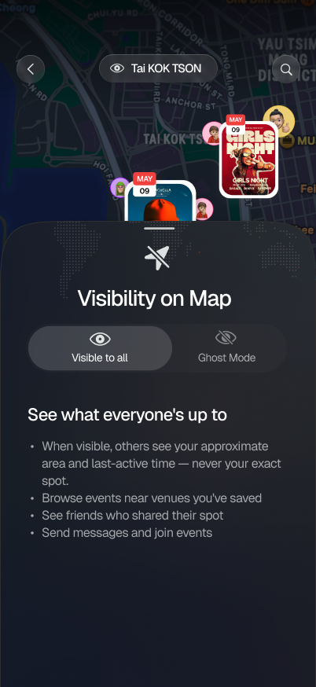
Visible to all
Default. Others see your approximate area + last active time — never your exact spot. You can browse events near saved venues, see friends who shared their spot, and send messages / join events.
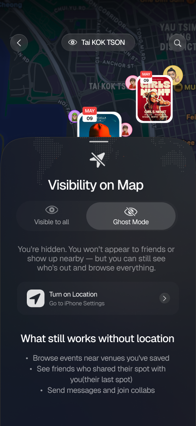
Ghost mode
You're hidden — you won't appear to friends or show up nearby, but you can still see who's out and browse everything. Send messages and join collabs still work.
Note: Ghost mode and a device with location off both resolve to the same "hidden but fully browsing" state — see build note 2.
Vouchers — "Mandos Coin"
ExperimentalClaimable digital discounts scattered on the map. Currently an exploration — we're testing the mechanic, not shipping the final economy.
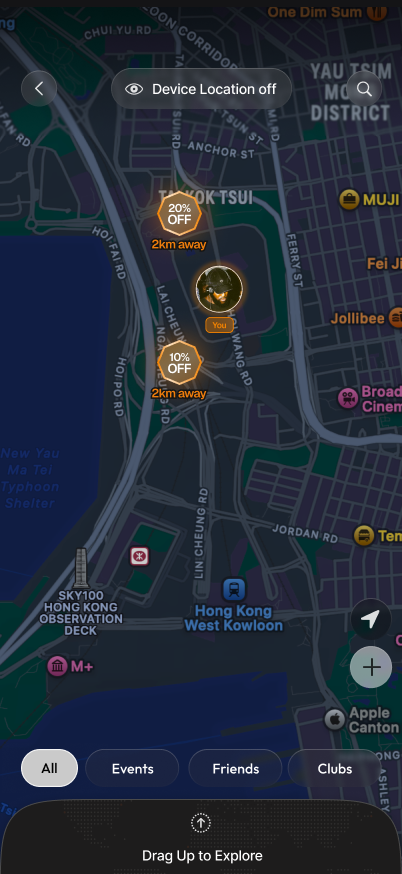
Vouchers on the map
Hexagonal coin pins show the discount and distance — "20% OFF · 2km away", "10% OFF · 2km away". Filterable like any other pin type. Tapping a coin opens the Voucher Found sheet.
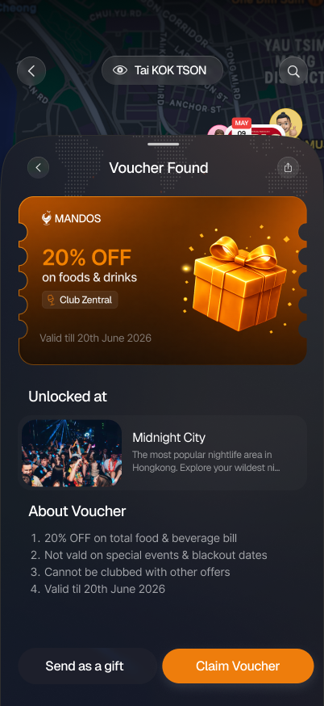
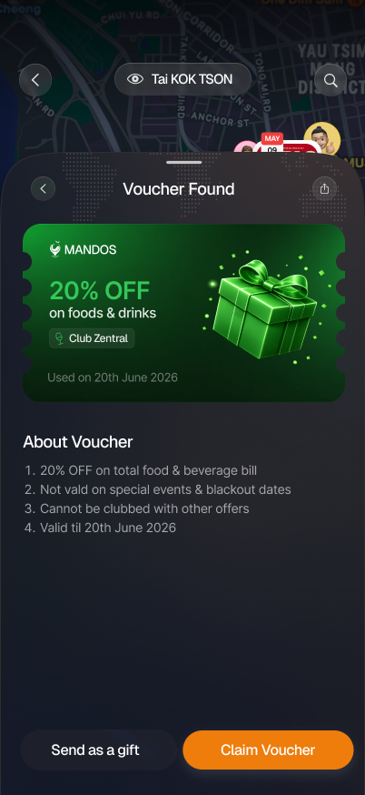
Voucher sheet
- Offer — e.g. "20% OFF on foods & drinks", venue tag (Club Zentral), validity date.
- Unlocked at — the region it belongs to (e.g. "Midnight City").
- About / terms — numbered rules (not valid on special events/blackout dates, can't be combined with other offers, valid-till date).
- Actions: Send as a gift and Claim Voucher.
- Claimed state re-skins the coin (green) and shows "Used on <date>".
- Phase 1 (now): pure digital exploration — a user can tap and claim from anywhere, no proximity check. Keep it simple.
- Phase 2 (later): geofencing — claim only unlocks when the user is physically near the venue/region. Design the voucher model now so the proximity gate can be switched on later without a rewrite.
- Authoring: all vouchers are created and managed in a web dashboard (offer, venue, region, validity, terms, blackout dates). The app only reads/claims them.
- Model these states/attributes: available → claimed → used; validity window; blackout dates; "not combinable"; and gift transfer to another user.
Build notes & open questions
The things worth agreeing on before code.
- Coarsen every user location server-side; broadcast area label + last-active time only.
- Foreground-only location, sampled on map-open. No background tracking.
- Only event markers scale by popularity; all others constant.
- Presence retention: shown indefinitely for now (small user base); 2-week cap later — no activity in ~14 days → drop off the map.
- Map population = "Out Tonight" users — same signal as the Discover page; open discovery, not just your connections.
- Cluster markers when zoomed out (Supercluster or native), count + dominant-type glyph, tap-to-expand.
- Vouchers: digital-claim now, geofenced later; authored via web dashboard.
- Map must stay browsable with location denied (self-hidden).
- Last-active thresholds — lock the exact cut-offs for Active / Stale / Very-stale / Inactive rings (mock shows 12 min / 34 min / 2 hr / 6 hr as examples).
- Grant-access timing — confirm the priming screen shows on first Social Map open (before the OS prompt), and how often the location-off reminder re-surfaces after that.
- Distance granularity — snap "km away" to buckets (e.g. 500 m / 1 km)? What's the coarsening radius for the area label?
- Ghost vs location-off — both hide the user; confirm whether Ghost still requires location ON (to power "near me"), or is purely a broadcast toggle.
- Voucher gifting — how does "Send as a gift" transfer ownership, and does the recipient inherit the same validity/geofence?
- Claim limits — any per-user daily cap on voucher claims?
Screens referenced (13): onboarding-grant-access ·
location-reminder · markers-legend · map-friends · date-select ·
clustering · user-profile-sheet · last-activity-status · visibility-visible ·
visibility-ghost · map-vouchers · voucher-found · voucher-claimed. A broader
earlier draft (regions, live chat, geofence states, search) lives in
../social-map-prd/.